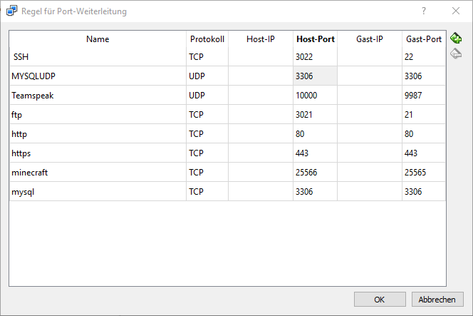

Server
Crößmann Projektarbeit
Inhalte
- Aufgabe & Projekt
- Durchführung
- Probleme
- Abschluss
Inhalte
- Aufgabe & Projekt
- Durchführung
- Probleme
- Abschluss
Aufgabe & Projekt - Aufgabe
- Arbeiten mit Virtualisierungsplattform
- Client-Server Architektur
- Funktionalität herstellen
- Präsentation und Dokumentation
- Zeitraum ca. 2 Monate
Aufgabe & Projekt - Idee
-
Ubuntu -
Webserver -
Fileserver
-
Mysql Server -
Game Server
-
Voice Server
Inhalte
- Aufgabe & Projekt
- Durchführung
- Probleme
- Abschluss
Durchführung - Erste Schritte
- Herunterladen der ISO
- Einbinden in Virtual Box
- Recourcen Zuweisen
- System: Linux Ubuntu
- Ram: 8Gb
- Festplatte: 100Gb
- Typ: dynamisch alloziert
Durchführung - Installation


Durchführung - Updates + Firewall
Diverse Basis-Pakete installieren
:^$ sudo apt-get upgradeFirewall Installieren
:^$ sudo apt-get install ufwFirewall Aktivieren
:^$ sudo ufw enableSSH Port Freigeben
:^$ sudo ufw allow ssh
Durchführung - Portweiterleitung


Durchführung - Benutzer Anlegen
Benutzer Hinzufügen
:^$ adduser [USERNAME]Rechte zuteilen
:^$ sudo usermod -aG sudo [USERNAME]Passwort Ändern
:^$ passwd [PASSWORT]
Durchführung - Webserver
apache2 Installieren
:^$ sudo apt-get install apache2Php installieren
:^$ sudo apt-get install php7.0 php7.0-fpm php7.0-mysql libapache2-mod-phpPorts
- http: 80
- https: 443
Durchführung - Webserver
Durchführung - Gameserver
Java Installieren
:^$ sudo apt-get install default-jreNeuen Screen Öffnen
:^$ screen -S minecraftMinecraft Herunterladen
:^$ wget [minecraft_server.1.13.1.jar-URL]Server Starten
:^$ java -jar server.jar
Ports Freischalten und Weiterleiten
- 25565 / 25566
Durchführung - Gameserver

Durchführung - Gameserver
Teamspeak User erstellen
:^$ sudo adduser ts3Herunterladen in Home Verzeichnis
wget http://dl.4players.de/ts/releases/3.4.0/teamspeak3-server_linux_amd64-3.4.0.tar.bz2
Entpacken und Removen
:^$ tar xjf [TEAMSPEAK.tar.bz2]:^$ rm [TEAMSPEAK.tar.bz2]ts3 User Rechte geben
:^$ chown -R ts3:ts3 /home/ts3Starten
:^$ bash ts3server_startscript.sh start license_accepted=1Ports
- 9987 / 10000
Durchführung - Gameserver
Durchführung - File Server
Benötigt File Zilla
sftp://ip-adressePorts
- SSH: 3022 / 22
- FTP: 3021 / 21

Durchführung - MySql
Php my Admin Installieren
:^$ sudo apt-get install phpmyadmin php-gettextNo Password Konfigurieren
:^$ sudo nano /etc/phpmyadmin/config.inc.phpPorts
- 3306 / 3306
Durchführung - Firewall/Ports


Inhalte
- Aufgabe & Projekt
- Durchführung
- Probleme
- Abschluss
Probleme
- Verbinden mit dem Server
- MySql User
- Internet vom Server
Inhalte
- Aufgabe & Projekt
- Durchführung
- Probleme
- Abschluss
Abschluss - Fazit
- erfolgreiche Durchführung
- neue Erfahrungen
- Vorbereitung für Abschlussprojekt
Quellen
- http://www.linux-home-server.de/
- https://karrierebibel.de/projektarbeit/
- https://websiteforstudents.com/install-ubuntu-18-04-lts-server-screenshots/
- https://wiki.ubuntuusers.de/TeamSpeak-Server/
- https://de.wikihow.com/Einen-FTP-Server-in-Ubuntu-Linux-einrichten